ChipboxMANUAL
1The main views
HOME flips between the main views.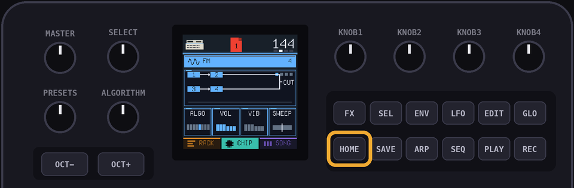
RACK shows the channels of the current page.CHIP allows you to edit the patch of the chip being used in the selected channel.SONG is the order your pages play in.HOME to open the project view.GLO shows the help for whatever view you're on.GLO + HOME opens the menu. Its first line opens the lessons: turn SELECT to pick one and press OCT+. A tick marks the ones you finished. A card over the bottom of the screen says what to do next and goes green when you have done it. GLO hides the card and brings it back. The lesson works on a scratch project and your own comes back when it ends. The menu has four groups: Lessons, Settings (Quick Start Always, Projects At Start, Show Tips, Dancing Animations, Show Battery), Sync and Link (MIDI Clock, Brothers Link) and Reset (Restore Demos, Factory Reset). OCT+ opens a group, OCT- goes back.SEQ opens step entry for a channel (or the drum lanes).FX is used for punch-in effects.HOME will always 'go back' when you're in a submenu.2Lessons
The lessons walk you through the whole workflow, one instruction at a time. GLO + HOME opens the menu; its first line is Lessons, a list with a tick on the ones you finished. Turn SELECT to pick one and press OCT+.
GLO puts the card away and brings it back. Your own project is set aside while a lesson runs and comes back when it ends. Nothing a lesson does is saved.OCT+ starts the next lesson and OCT- ends this one.OCT+ goes on, HOME puts it away, GLO brings it back) alternate with things to do on the screen.| # | Lesson | You learn |
|---|---|---|
| 1 | Get Around | Views, the rack, a first play. |
| 2 | First Notes | Write a tune in step entry. |
| 3 | Rests | Skip a step to leave a gap. |
| 4 | Length and Erase | Shorten a page, wipe a step. |
| 5 | Play and Tape | Loop a page, record the tape. |
| 6 | Record Live | Play the keys into a running page. |
| 7 | Pages | Add pages and move between them. |
| 8 | Make a Song | Order the pages in the song. |
| 9 | Copy a Page | Repeat a page in the song. |
| 10 | Tempo | The song's speed. |
| 11 | Change the Sound | Pick a patch and shape it. |
| 12 | Envelope | Attack and decay. |
| 13 | Arpeggio | Play a chord as a run of notes. |
| 14 | Vibrato and Sweep | Move the pitch. |
| 15 | Add a Channel | A second voice. |
| 16 | Add Drums | A drum channel and its lanes. |
| 17 | Drum Accents | Louder hits. |
| 18 | Masterclass: Drums | How drums are built, the backbeat, hats, syncopation, accents, choke, odd groupings. |
| 19 | Mixing | Levels between channels. |
| 20 | Punch-in FX | Effects you play with your hands. |
| 21 | Undo | Take a change back. |
| 22 | Copy a Channel | Duplicate a voice. |
| 23 | New Console | Swap a channel's chip. |
| 24 | Draw a Wave | Make your own waveform. |
| 25 | Masterclass: Waves | Wave tables: harmonics, shape, fold, steps, twist, drawing, why old chips sound old. |
| 26 | Odd Meters | 3/4, 5/4, 7/8 and friends. |
| 27 | Long Pages | Pages of up to four bars. |
| 28 | Tempo Changes | A tempo for one page. |
| 29 | Glide | Slide the tempo between pages. |
| 30 | Slide Steps | Move a channel's steps along the page. |
| 31 | Note Tails | See how long each note rings. |
| 32 | FX Latch | Keep a punch-in effect on. |
| 33 | The NES Pulse | The controls it has: DUTY, SWEEP, VIB, ATK, REL. |
| 34 | The Game Boy | The controls it has: DUTY, PAN, SWEEP. |
| 35 | The Master System | The controls it has: NOISE, VIB, SWEEP, DEC. |
| 36 | The PC Engine | The controls it has: WAVE, PAN, FOLD, TWIST, SWEEP. |
| 37 | The Atari TIA | The controls it has: TYPE, SWEEP, VIB, ATK. |
| 38 | The VRC6 Saw | The controls it has: OVER, VIB, SWEEP, SUS. |
| 39 | The AY Chip | The controls it has: NOISE, PERIOD, BUZZ, BRATIO. |
| 40 | The Mega Drive | The controls it has: ALGO, PAN, TL, AR, D1L. |
| 41 | The Virtual Boy | The controls it has: WAVE, PAN, TWIST, SWEEP. |
| 42 | The Atari POKEY | The controls it has: DIST, SWEEP, HPF, CLOCK. |
| 43 | The PC Speaker | The controls it has: DUTY, VIB, SWEEP, SHAPE, RATE. |
| 44 | The AdLib | The controls it has: CNT, FB, TREMD, VIBD, WAVE. |
| 45 | Namco WSG | The controls it has: WAVE, SWEEP, FOLD, STEP. |
| 46 | The Namco 163 | The controls it has: WAVE, STEP, LENGTH, BRUSH. |
| 47 | Sunsoft 5B | The controls it has: NOISE, BUZZ, PERIOD, MIXENV. |
| 48 | The NES MMC5 | The controls it has: DUTY, VIB, DEC. |
| 49 | The Famicom Disk | The controls it has: WAVE, DEPTH, RATIO, SWEEP, SHAPE. |
| 50 | The MSX SCC | The controls it has: WAVE, SWEEP, FOLD, TWIST, BRUSH. |
| 51 | MSX Music | The controls it has: INST, FB, PEDAL, TL, MUL. |
| 52 | The VRC7 | The controls it has: INST, FB, PEDAL, TL, AR. |
| 53 | FM Synthesis | The controls it has: ALGO, FB, PAN, SPEED, PMD, PMS, TL, MUL. |
| 54 | Masterclass: FM | Why FM sounds as it does: operators, index, ratio, envelopes, feedback, every algorithm, detune, the LFO. |
| 55 | The OPL3 | The controls it has: CONN, PAN, TREMD, WAVE. |
| 56 | The WonderSwan | The controls it has: WAVE, PAN, FOLD, BRUSH. |
| 57 | The SAA1099 | The controls it has: NOISE, PAN, ENV, ERES, NRATE. |
| 58 | The VIC-20 | The controls it has: TYPE, SWEEP, VIB, ATK. |
| 59 | The Plus/4 TED | The controls it has: TYPE, SWEEP, SHAPE, RATE. |
| 60 | The Atari Lynx | The controls it has: TYPE, PAN, INTEG, TAPS, BAL. |
| 61 | The PC-98 | The controls it has: ALGO, FB, PAN, TL, AR. |
| 62 | The Neo Geo | The controls it has: ALGO, FB, LFO, PMS, MUL. |
| 63 | The Neo Geo Pocket | The controls it has: NOISE, PAN, SWEEP. |
| 64 | The OPL | The controls it has: CNT, FB, TREMD, TL, KSL. |
| 65 | The OPZ | The controls it has: ALGO, SPEED, WAVE, TL, FINE, DT2. |
| 66 | The SN76477 | The controls it has: MIX, SLF, FILTER, RATE, DEPTH, DUTY. |
| 67 | Namco C30 | The controls it has: WAVE, PAN, FOLD, BRUSH. |
| 68 | The MSM5232 Organ | The controls it has: FOOT, QUINT, VIB, ATK. |
| 69 | The ZX Beeper | The controls it has: DUTY, VIB, SWEEP, SHAPE, RATE. |
| 70 | The YM2203 | The controls it has: ALGO, FB, TL, MUL, AR. |
| 71 | The SID | The controls it has: WAVE, CHIP, PW, SYNC, CUT, RES, MODE. |
| 72 | Masterclass: SID | Subtractive synthesis: waves, pulse width, the filter and its modes, sync, ring modulation, the two chips. |
| 73 | Your First Song |
Drumlab
FX, undo, the sound lab, patches A and B, kits and the PO-32 send window.3Channels
PRESETS, then press OCT+ to add a channel.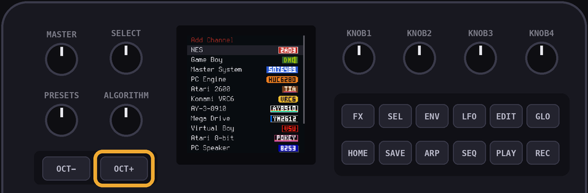
OCT- goes back a step.SEL opens a card for the console: a bigger picture, its year and maker. SELECT turns to the next one.PRESETS selects the channel in the RACK, CHIP and STEP views.EDIT on a channel to remove it.SEL on a channel to copy it. You can copy the patch only, or the patch and the notes.EDIT on a channel to give it another console. Its notes stay. Going between notes and drums clears the track, so you are asked first: OCT+ for yes, OCT- for no.KNOB 2 to set the channel's level. A bar under its name shows it for a moment.KNOB 3 to slide the channel's steps along the page.KNOB 4 to duck the channel when a kick plays. Any drum channel's kick counts.| Console | Channels | Documentation |
|---|---|---|
| NES | Pulse, Triangle, Noise, Drums | APU, APU mixer (NESdev wiki) |
| Game Boy | Pulse, Wave, Noise, Drums | Audio (Pan Docs) |
| Master System | Tone, Drums | SN76489 (SMS Power!) |
| PC Engine | Wave, Noise, Drums | PC Engine (Furnace manual) |
| Atari 2600 | Sound, Drums | TIA hardware notes (Andrew Towers) |
| Konami VRC6 | Pulse, Saw, Drums | VRC6 audio (NESdev wiki) |
| AY-3-8910 | Tone, Drums | AY-3-8910 (Wikipedia) |
| Mega Drive | FM, Drums | Mega Drive audio (Sonic Retro), YM2612 (Wikipedia) |
| Virtual Boy | Wave, Noise, Drums | Virtual Boy (Furnace manual) |
| Atari 8-bit | Sound, Drums | POKEY (Furnace manual), POKEY (Wikipedia) |
| PC Speaker | Beeper, Drums | PC speaker (Furnace manual), PC speaker (Wikipedia) |
| AdLib | FM, Drums | OPL (Furnace manual) |
| Namco WSG | Wave, Drums | Namco WSG (Furnace manual) |
| Namco 163 | Wave, Drums | Namco 163 audio (NESdev wiki) |
| Sunsoft 5B | Tone, Drums | Sunsoft 5B audio (NESdev wiki) |
| NES MMC5 | Pulse, Drums | MMC5 audio (NESdev wiki) |
| Famicom Disk | Wave, Drums | FDS audio (NESdev wiki) |
| Konami SCC | Wave, Drums | SCC (Furnace manual) |
| MSX Music | FM, Drums | OPLL (Furnace manual) |
| Konami VRC7 | FM, Drums | VRC7 audio (NESdev wiki) |
| Arcade FM | FM, Drums | YM2151 (Furnace manual) |
| Sound Blaster | FM, Drums | OPL (Furnace manual) |
| WonderSwan | Wave, Drums | WonderSwan (Furnace manual) |
| Sam Coupe | Tone, Drums | SAA1099 (Furnace manual) |
| VIC-20 | Tone, Drums | VIC-20 (Furnace manual) |
| Plus/4 | Tone, Drums | TED (Furnace manual) |
| Atari Lynx | Sound, Drums | Lynx (Furnace manual) |
| PC-98 | FM, SSG, Drums | YM2608 (Furnace manual) |
| Neo Geo | FM, SSG, Drums | YM2610 (Furnace manual) |
| Neo Geo Pocket | Tone, Drums | T6W28 (Furnace manual) |
| MSX-Audio | FM, Drums | Y8950 (Wikipedia), OPL (Furnace manual) |
| Yamaha TX81Z | FM, Drums | OPZ (Furnace manual) |
| SN76477 | Sound, Drums | SN76477 (Wikipedia) |
| Namco System 1 | Wave, Drums | Namco (Furnace manual) |
| Korg Poly-800 | Organ, Drums | MSM5232 (Furnace manual), Korg Poly-800 (Wikipedia) |
| ZX Spectrum | Beeper, Drums | ZX Spectrum (Wikipedia) |
| NEC PC-88 | FM, SSG, Drums | YM2203 (Furnace manual) |
| Commodore 64 | Voice, Drums | SID (C64-Wiki), reSID (Dag Lem) |
The drum kits also borrow from the Game Boy sound hardware page (its noise modes) and the YM2413 notes in the Furnace manual (the Master System kit's cymbals).
4The rack
KNOB 1 sets the tempo, from 40 to 240 bpm.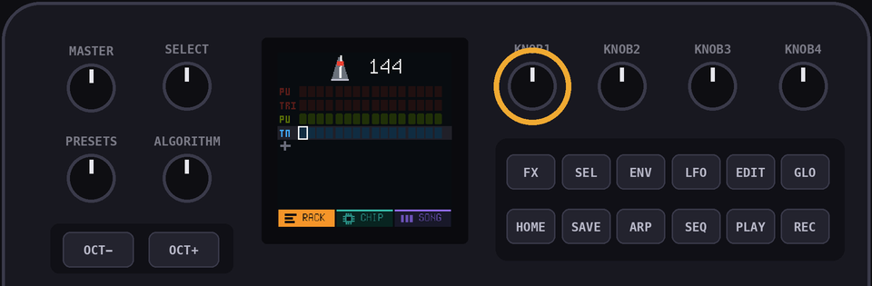
ALGORITHM flips through the pages.PLAY plays the song from the current page.PLAY to loop just the current page.SELECT is the tape dial. Turn it right to play (half speed, normal speed or double speed) or left to play backwards. The middle position pauses.SELECT moves the cursor.OCT- and OCT+ move the keys down or up an octave, by up to two octaves.ARP shows or hides note tails, the line under a long note.5Writing notes
There are three ways to write notes. You can mix them.
Step entry
SEQ opens the current page as blocks, 16 to a screen.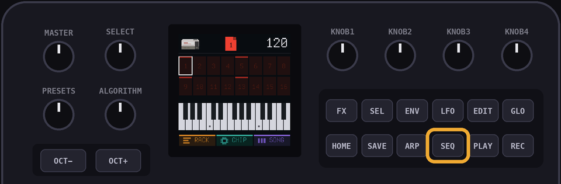
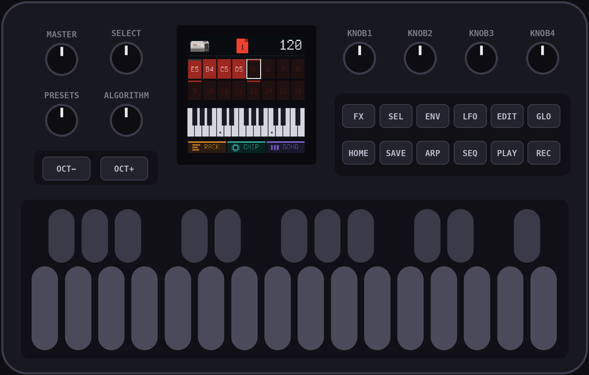
SELECT moves the cursor, so you can leave rests.EDIT clears the block.KNOB 2 sets the length of a note, in steps. Turn it while you hold a key, or while the cursor is on a note.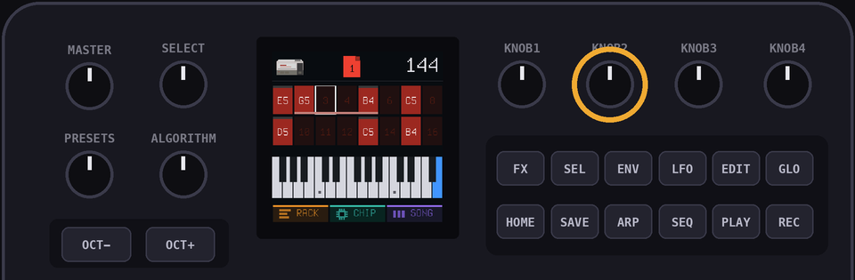
KNOB 3 sets the meter of the page and KNOB 4 sets its length in bars. KNOB 1 sets the tempo of this page alone, and SEL glides it into the next page's. See Meter and tempo.PLAY loops the page while you work.Recording
REC loops the page and starts recording.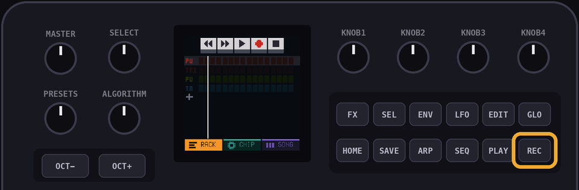
EDIT to erase notes as the playhead passes them.SELECT left once to record at half speed.6The chip screen
CHIP shows the patch of the selected channel.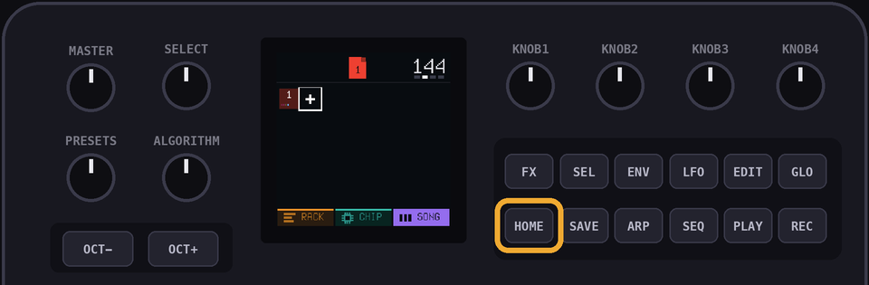
KNOB 1 to KNOB 4 change the four cards on screen.ALGORITHM flips between the pages of cards.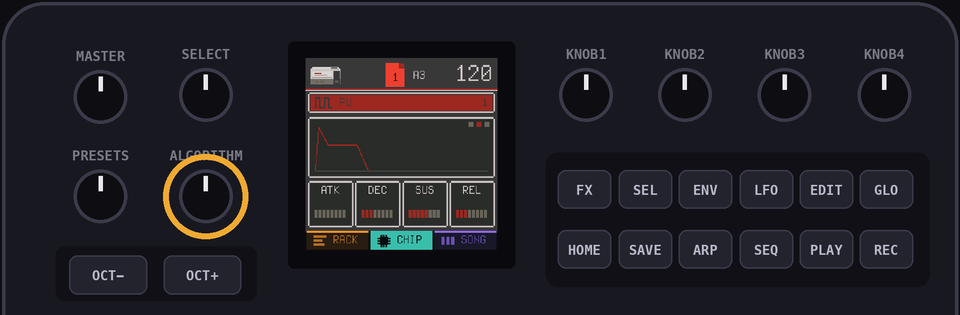
Page 1: the tone
| Card | What it does |
|---|---|
DUTY, WAVE, BUZZ, NOISE or ALGO | The first knob. It depends on the chip. See the consoles below. |
VOL | Sets the level of the channel. |
VIB | Sets the depth of the vibrato. |
SWEEP | Slides the pitch up or down while a note is held. On the NES pulse, far from the middle it moves several notes a step. |
PAN | Sets left, centre or right. Chips with stereo have PAN instead of SWEEP, and keep SWEEP on a page of its own where the real chip has one. |
Page 2: the envelope
ATK is how long the sound takes to rise.DEC is how long it takes to fall to SUS.SUS is the level it holds while the key is down.REL is how long it takes to fade out after you let go.Page 3: the arp
SHAPE picks the chord.RATE sets the speed.DIR is up, down, or up and down.Page 4: waves and FM
SHAPE, FOLD, STEP and TWIST.SHAPE morphs between pulse, saw, triangle and sine.FOLD folds the wave back on itself, which makes it brighter.STEP reduces the number of levels, which crushes the wave.TWIST bends the wave sideways.Draw your own wave
ALGORITHM to reach it.SELECT to pick a step of the wave. Turn KNOB 1 to set its height.KNOB 2 to move 1, 2, 4 or 8 steps at once. Turn KNOB 3 to copy your edits to the far side of the wave.SHAPE, FOLD, STEP or TWIST knob to go back to the generated wave. LFO undoes it.7The consoles
| Console | Notes |
|---|---|
| NES | Pulse has four duties: 12.5, 25, 50 and 75 percent. Triangle has no volume knob. Noise has MODE, the long or the short shift register, and PERIOD: 0 follows the note, 1 to 15 fix the rate. The output goes through the NES's own filters. |
| Game Boy | Pulse has four duties. Wave has four volume steps and stereo. Noise has WIDTH, the long or the short register, and stereo; each note picks the nearest of the chip's noise rates. Pulse and wave have a SWEEP page. The output goes through the Game Boy's high-pass filter. |
| Master System | Tone is a square wave with 16 volume levels. NOISE picks tone, white or periodic noise that follows the note, or the chip's three fixed noise rates of each. |
| PC Engine | Wave has 16 volume levels and stereo. Noise has RATE: 0 follows the note, 1 to 31 fix it. Wave has a SWEEP page. |
| Atari 2600 | TYPE picks one of eleven sound types, from clean tones to buzzes to white noise. |
| Konami VRC6 | Pulse has eight duties. Saw is a stepped saw wave, twice as loud as the pulse at the same volume. OVER raises its rate past the usual top, so the saw wraps and turns rough. |
| AY-3-8910 | Tone is a square wave with 16 volume levels. NOISE 0 is tone only. 1 to 14 gate the tone with noise, a faster noise the higher you go. 15 is noise alone, which is useful for hats and snares. A fourth page has PERIOD, which fixes the noise rate, and BUZZ, which plays the chip's envelope as the sound, with BRATIO setting its speed against the note. |
| Mega Drive | FM has four operators and eight algorithms, through the chip's grainy 9 bit output. See FM chips. |
| Virtual Boy | Wave has 32 steps of 6 bits, which is finer than the Game Boy. It has stereo. Noise has TAP, which picks the shift register's feedback tap. Wave has a SWEEP page. Notes below about D2 play at the chip's lowest pitch. |
| Atari 8-bit | DIST picks one of eight distortions, from a clean tone through buzzes to noise. A fourth page has HPF, the high-pass filter, and CLOCK, which runs the noise from the 15 kHz or the 1.79 MHz clock. |
| PC Speaker | One square wave with no volume. Notes are a little out of tune, like the real timer. The sound goes through a small speaker's filter. |
| AdLib | FM has two operators. See FM chips. |
| Namco WSG | Wave has 32 steps of 4 bits and 15 volume levels. The output goes through a low-pass filter. |
| Namco 163 | Wave works like the WSG, and LENGTH sets how many steps the wave has, from 4 to 64. The chip shares one converter between its voices, so more channels playing at once sound grittier and quieter. |
| Sunsoft 5B | Tone and NOISE work like the AY-3-8910, with 3 dB volume steps. BUZZ runs the envelope as the sound: off, falling, rising, triangle or a pluck. RATE sets its speed against the note, and MIXENV plays the tone together with it. |
| NES MMC5 | Pulse works like the NES pulse: four duties and the NES's own mixer. There is no triangle and no sweep. |
| Famicom Disk | Wave has 32 steps of 6 bits and goes through a low-pass filter. MOD sets how hard the chip's modulator bends the wave, from off to deep. |
| Konami SCC | Wave has 32 steps of 8 bits. Like all the chips with a divider, high notes land on the chip's steps and can be a little out of tune. |
| MSX Music | INST picks one of the chip's 15 built-in instruments, or your own. See FM chips. |
| Konami VRC7 | Works like MSX Music, with the VRC7's own 15 instruments. See FM chips. |
| Arcade FM | FM has four operators and a LFO. ALGO picks one of eight ways to connect them. It has stereo. See FM chips. |
| Sound Blaster | FM has four operators. CONN picks one of four connections, and every operator has its own wave. It has stereo. See FM chips. |
| WonderSwan | Wave has 32 steps of 4 bits and stereo. The chip's output is sampled at 24 kHz, so it sounds crunchier than the Namco chips. Notes below about G1 play at the chip's lowest pitch. |
| Sam Coupe | Tone and NOISE work like the AY-3-8910, with linear volume and stereo. While the noise is high the tone is half as loud. A fourth page has the envelope generator: ENV picks a shape, ERES makes the steps coarser, NRATE fixes the noise rate. |
| VIC-20 | The pitch is a 7 bit divide, so high notes are a little out of tune, like the real chip. TYPE 1 swaps the square wave for the noise voice. |
| Plus/4 | TYPE 1 swaps the square wave for noise. Notes below A2 play an octave higher, because the chip can't go lower. |
| Atari Lynx | TYPE 1 is a square wave. The rest run the chip's shift register with different taps: short ones sound like buzzy tones, long ones like noise. It has stereo. A fourth page has INTEG, which integrates the output, TAPS, which picks another short cycle, and BAL, a finer balance than PAN. |
| PC-98 | FM works like Arcade FM, with stereo. SSG works like the AY-3-8910. |
| Neo Geo | The same as PC-98: FM with stereo, and an SSG like the AY-3-8910. |
| Neo Geo Pocket | Tone is a square wave with stereo. It works like the Master System's, noise included. It has a SWEEP page. |
| MSX-Audio | FM has two operators, A and C. ALGO picks FM or both playing. It has no wave choices, unlike the AdLib. |
| Yamaha TX81Z | FM has four operators and the eight Arcade FM algorithms. Each operator has its own wave, one of eight: sine, sine squared, half sine, half sine squared, alternating sine, alternating sine squared, camel sine and camel sine squared. |
| SN76477 | MIX picks tone, tone with noise, noise, or siren. SLF swings the pitch up and down, from off to fast. The siren swings it twice as far. A fourth page has FILTER, RATE, DEPTH and DUTY for the noise filter, the noise rate, how deep the slow oscillator swings and the square's width. |
| Namco System 1 | Wave works like the WSG, with stereo. |
| Korg Poly-800 | An organ. FOOT turns four pitches on or off: 16' (an octave down), 8' (the note), 4' and 2' (one and two octaves up). QUINT adds a fifth above the note, or a fifth above the octave, or both. |
| ZX Spectrum | A pulse wave with no volume. DUTY sets how thin the pulse is. The speaker is one bit, so every voice shares it and chords crunch. |
| NEC PC-88 | FM works like Arcade FM, with one speaker. SSG works like the AY-3-8910. |
| Commodore 64 | One voice of the SID, with its own filter. It has five pages of knobs. See below. |
FM chips
SEL on an FM chip's screen to pick what the knobs edit: the channel, then each operator in turn. The picture lights the operator you are on.ALGORITHM for the pages of the channel or the operator.LFO's tremolo shake the operator's level.FB (the feedback of operator 1), PAN, VOL, and the LFO.LFO has a speed, a wave, and two depths: PMD for vibrato, AMD for tremolo. PMS and AMS pick how much of each reaches the channel. The Mega Drive, PC-98 and Neo Geo LFO has eight speeds.LFO and no panning.WAVE picks one of eight shapes for each operator.Algorithms of Arcade FM, the Mega Drive and the others
ALGO 1: 1, 2, 3 and 4 in a chain. Only 4 is heard.ALGO 2: 1 and 2 both modulate 3, which modulates 4. Only 4 is heard.ALGO 3: 2 modulates 3. 1 and 3 both modulate 4. Only 4 is heard.ALGO 4: 1 modulates 2. 2 and 3 both modulate 4. Only 4 is heard.ALGO 5: 1 modulates 2, and 3 modulates 4. 2 and 4 are heard.ALGO 6: 1 modulates 2, 3 and 4. All three are heard.ALGO 7: 1 modulates 2. 2, 3 and 4 are heard.ALGO 8: all four play on their own.AdLib, MSX-Audio and Sound Blaster
WAVE are on the first page. AR, DR, SL and RR are on the second.VIB, which switch the chip's tremolo and vibrato on for the operator, HOLD, which keeps the level until you let go, and KSR, which makes high notes run their envelopes faster.MSX Music and Konami VRC7
WAVE (sine or half sine). The carrier has no level of its own: VOL sets it. PEDAL makes the release slower.Commodore 64 voice
WAVE picks triangle, saw, saw with triangle, pulse, pulse with triangle, pulse with saw, all three, or noise. The combined waves come from real chips. Some of them are silent at some pulse widths, like the real ones.CHIP picks a 6581 or an 8580. They differ in the combined waves and the filter.ATK, DEC, SUS and REL are the chip's own envelope, with the same times.8Drums

BD (kick), SD (snare), LT, MT and HT (toms), RS (rimshot), CP (clap), CH (closed hat), OH (open hat), CR (crash) and RD (ride).SEQ opens the drum lanes, with one row per drum and 16 steps across.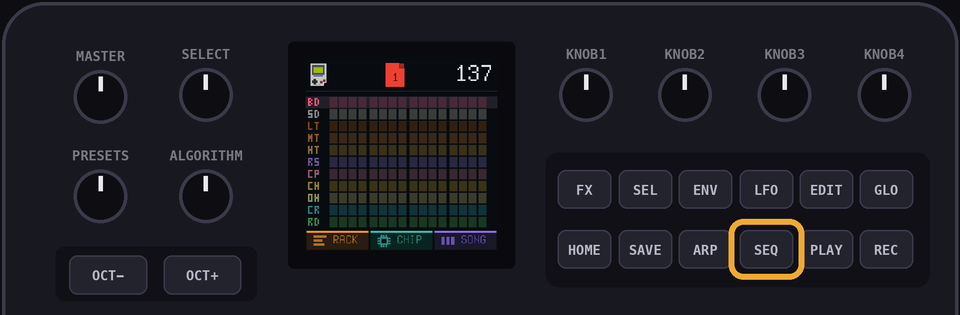
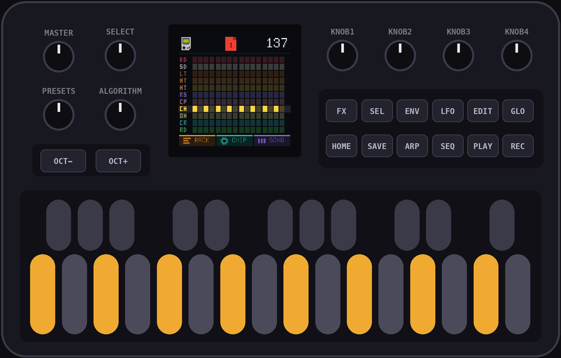
ENV while you press a white key to place an accent, a louder hit. On a hit that is already there, ENV switches the accent on or off.EDIT clears the picked drum on the current page.9The song
SONG shows a row of slots. Each slot holds a page.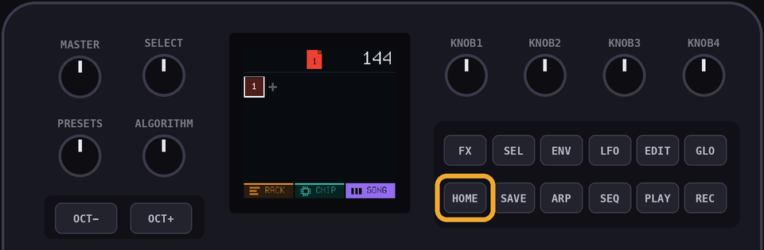
SELECT moves the cursor.PRESETS knob to change the page used in the selected slot.OCT+ adds a slot after the current one, with a new empty page.OCT- removes the slot.EDIT to open the slot's page in the RACK.EDIT to copy the page. The copy replaces the page in this slot only.PLAY plays the song from the current slot.10Meter and tempo
Every page has a meter, a length and, if you want one, a tempo of its own. A new page starts in 4/4, one bar long, at the song's tempo.
Meter and length
SEQ and turn KNOB 3 to pick the meter: 2/4, 3/4, 4/4, 5/4, 6/8 or 7/8.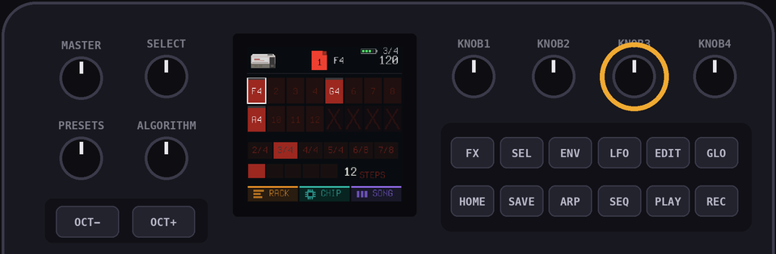
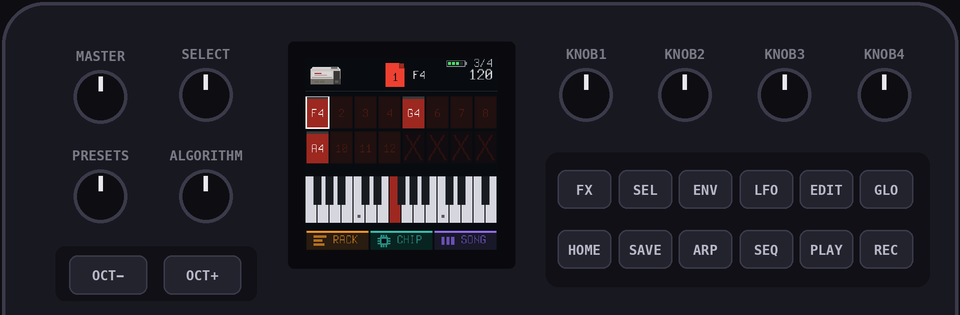
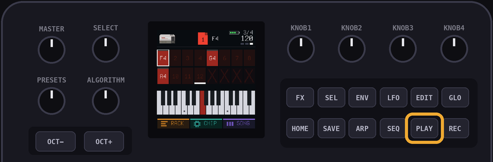
Long pages
KNOB 4 to add bars. A page can have up to 64 steps: four bars in 4/4, five in 3/4.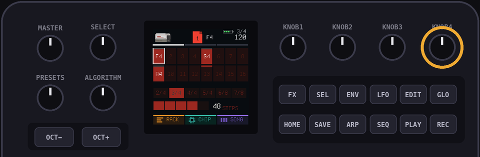
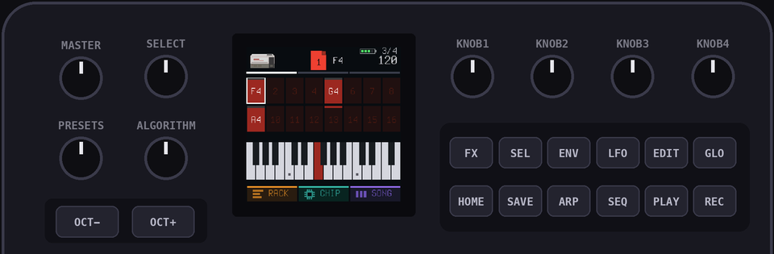
SELECT moves the cursor onto the next screen. On a drum channel, SELECT turns whole screens.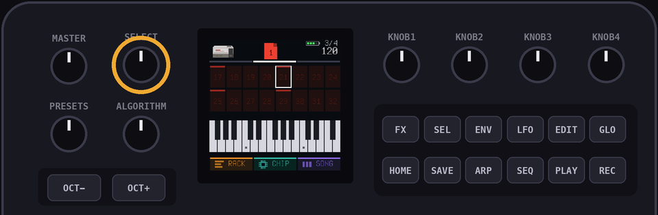
RACK the screen follows the playhead while the page plays.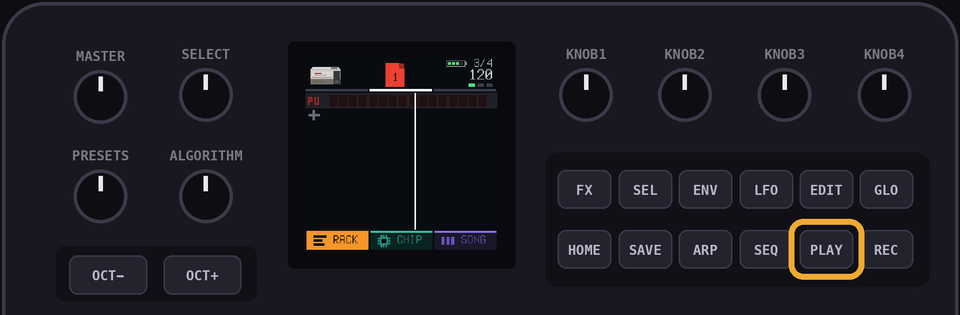
A tempo for a page
KNOB 1. The page gets a tempo of its own and the tempo turns amber.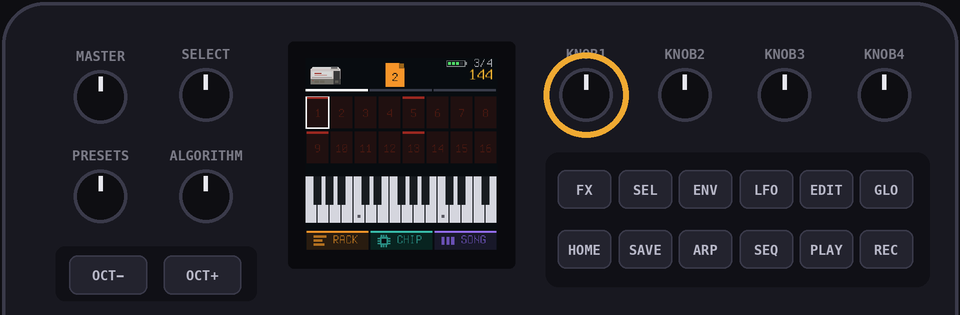
KNOB 1 changes the tempo you see: the page's own if it has one, the song's if it doesn't.Glide
SEL in step entry. The page glides from its tempo into the tempo of the next page in the song. A little curve by the tempo shows how, going down for a slower page and up for a faster one.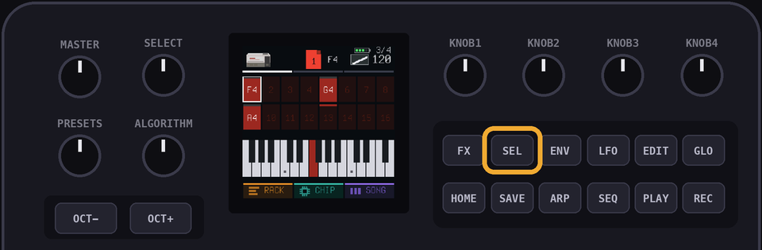
SEL again for the next shape. Straight moves at a steady pace. Ease in waits and changes late, which is how a ritardando digs in at the end. Ease out changes early and settles. One more tap and the glide is off.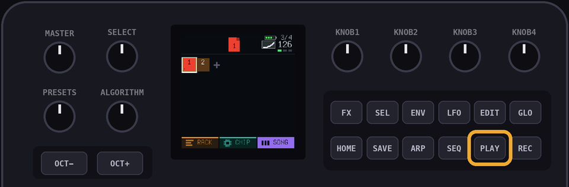
Try it
11Projects
HOME to open the project view. It has twelve tiles, each with a small picture of the first page.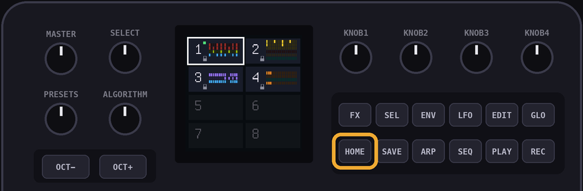
SELECT or PRESETS moves between tiles. OCT+ opens a tile. OCT- goes back.EDIT on a demo to delete it. Its slot becomes an ordinary one (tiles 11 and 12). Restore Demos in the menu (GLO + HOME) brings the demo back to an empty slot.SEL on a tile to copy that project into the first empty tile.EDIT on a tile to delete that project.SAVE to force a save just in case.SAVE light glows while there are unsaved changes.GLO + HOME) deletes all your projects and brings the demos back.12Undo
LFO key.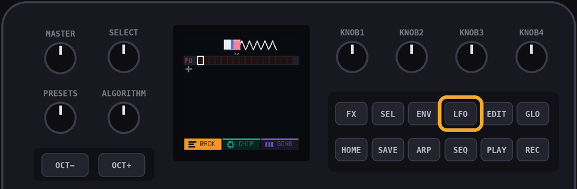
13Effects
FX turns the 16 white keys into effects pads.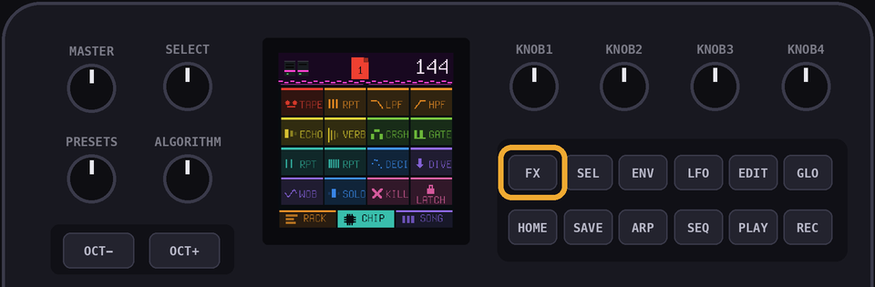
| Pad | Effect | What it does |
|---|---|---|
| 1 | TAPE (shared) | Controls the tape with SELECT. |
| 2 | RPT (shared) | Repeats the current step every sixteenth note. |
| 3 | LPF (shared) | Low-pass filter. |
| 4 | HPF (shared) | High-pass filter. |
| 5 | ECHO (shared) | Tape echo. |
| 6 | VERB (shared) | Reverb. |
| 7 | CRSH (shared) | Reduces the number of levels. |
| 8 | GATE (shared) | Chops the sound at the sixteenth notes. |
| 9 | RPT | Repeats the current step every eighth note. |
| 10 | RPT | Repeats the current step every thirty-second note. |
| 11 | DECI | Drops the sample rate. |
| 12 | DIVE | The pitch dives an octave. |
| 13 | WOB | A slow pitch wobble. |
| 14 | SOLO | Plays the channel you are on, alone. |
| 15 | KILL | Silences everything. |
| 16 | LATCH | The latch: tap a pad to keep it on, tap it again to turn it off. |
14The numbers
| Channels | 16 |
| Steps in a page | Up to 64, 16 to a screen |
| Pages | 64 |
| Slots in a song | 128 |
| Projects | 10, and two demos |
| Undo | About 30 changes |
| Notes in a project | About 2000 |
| Tempo | 40 to 240 bpm, for the song or a page |
| Meters | 2/4, 3/4, 4/4, 5/4, 6/8 and 7/8 |
15Bluetooth sync
GLO + HOME and pick Bluetooth. On the leader, set Sync to Lead. On the others, set it to Follow. OCT+ changes it.PLAY on the leader. The followers start at the next bar and take its tempo. Stop the leader and they stop.16MIDI keyboard
17Updates and rescue
OCT- while plugging it in. The install page will fix it from there.